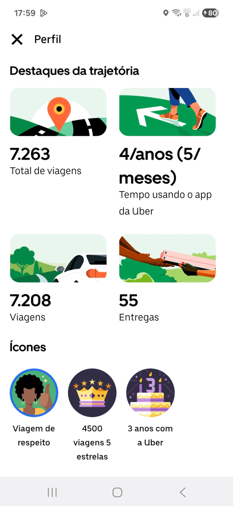
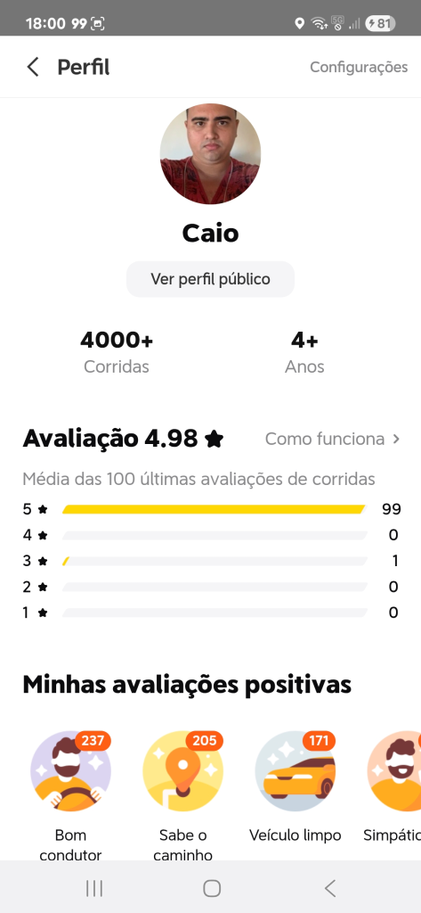

printf("Olá, Universo!");
Quem sou eu?
Me chamo Caio, nascido em 11 de março de 1999, em Natal/RN, sempre fissurado por tecnologia, incluindo jogos, programas e computação em si;
Ensino médio concluído em 2016 na Escola Estadual Desembargador Floriano Cavalcanti, Natal/RN.
Servi na Base Aérea de Natal por 4 anos e fui motorista de aplicativo na Uber e na 99Pop por 5 anos.
Marido de uma mulher maravilhosa e pai de uma princesa linda.
Atualmente cursando superior tecnólogo em Sistemas para Internet na Estácio, desde Agosto de 2025.
Primeiros experimentos em C, C++, Python, JavaScript, HTML, CSS e buscando aprender várias outras linguagens de programação.
Minha última experiência foi trabalhando como expert em interação na Teleperformance.

